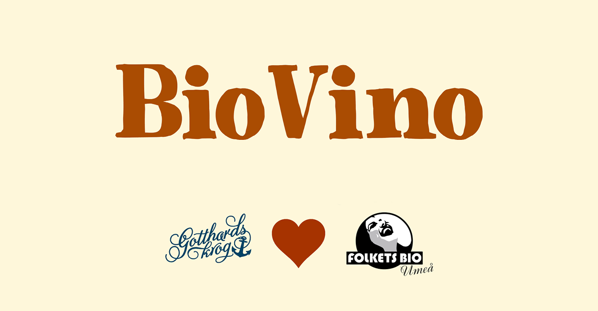
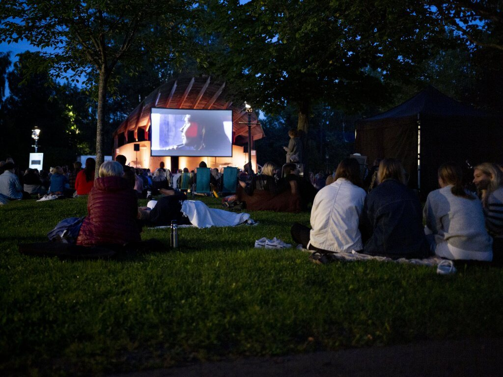
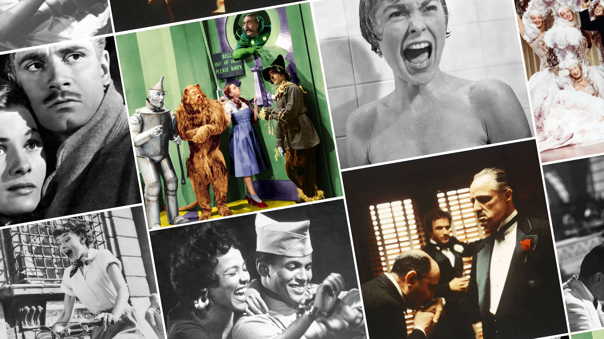
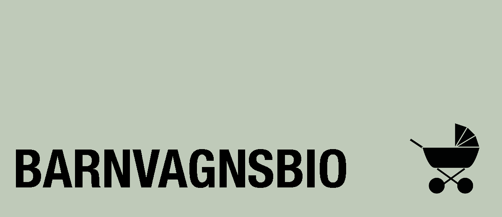
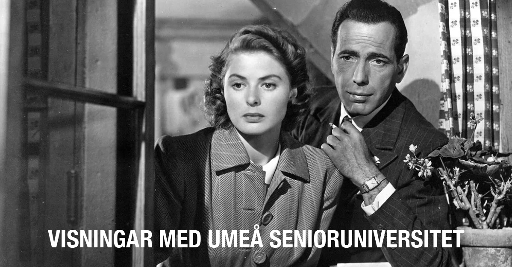

EVENEMANG
Här är alla de kommande evenemangen som vi arrangerar. Se till att få din biljett!

BioVino
På torsdagar erbjuder vi bio och middag för 400:– tillsammans med Gotthards krog! Varmrätt serveras från kl 17.00 på Gotthards Piazza och filmen startar kl.20.00 hos oss på Folkets Bio Umeå. Som vanligt är maten som serveras inspirerad av filmen! I priset ingår: Kvällens Varmrätt på Gotthards Krog + Kvällens Film på Folkets Bio. För middag och bio, sker bokning hos Gotthards Krog: Klicka här för att boka online, eller ring tel 090-690 33 00 - Gotthards Krog säljer även presentkort för BioVino.
När du bokar BioVino-paketet hos Gotthards Krog reserveras en plats automatiskt på filmvisningen - du behöver alltså inte boka en separat biobiljett. Vill du bara se filmen? Då bokar/köper du biljett i biljettkassan eller här på sidan, precis som vanligt! BioVino mars: Torsdag 19 mars: Romería Torsdag 26 mars: The Testament of Ann Lee BioVino april: Torsdag 2 april: I Swear Torsdag 9 april: The Drama Torsdag 16 april: Father Mother Sister Brother

Umeå Filmfestival
24-29 Nov 2026
Umeå Filmfestival (UEFF) är en årlig filmfestival som 2026 kommer att genomföra sin 13:e upplaga. Festivalen drivs av den ideella föreningen Folkets Bio Umeå och sedan 2014 finns föreningen och filmfestivalen i kulturhuset Väven. Under sex dagar visar vi runt 90 filmer på flera olika platser i Umeå. Biljetter släpps några veckor innan och kan köpas genom vår hemsida och i Folkets Bio Umeås biljettkassa. Man kan både köpa biljett till en filmvisning eller köpa ett klippkort till flera filmer.
Festivalen visar ett omsorgsfullt urval av nyproducerade filmer med fokus på europeisk film och film från norr. Men ibland gör vi avstickare mot andra spännande platser i världen och varje år plockar vi ur ett antal gamla klassiker. Under veckan arrangerar vi en mängd av olika tillhörande arrangemang: kluriga filmquiz, samtal med gästande filmskapare, en oförglömlig Sing along och många andra festligheter! Vi gillar att skapa platser för människor att mötas och få prata om film tillsammans. Varje sommar står vi också som värd för Bio i parken då vi visar utomhusbio i någon av alla fantastiska parker runt om i Umeå. Umeå Filmfestival arrangeras årligen med stöd av Svenska Filminstitutet, Film i Västerbotten och Umeå Kommun.

Klassiker på Folkets Bio Umeå
Upplev filmhistoriska mästerverk på vita duken genom vår klassikerserie!
METROPOLIS Visas söndag29 mars 16.00 - KÖP BILJETT Fritz Lang, 1927 I den futuristiska staden Metropolis är klassamhället tydligt. Längst upp lever eliten sina lättjefulla liv i en paradisisk tillvaro. I stadens katakomber däremot råder slavlika förhållanden för de arbetare som får den högteknologiska staden att fungera. När de två ytterligheterna möts, och två representanter från respektive klass faller för varandra, blir det upphovet till en omstörtande revolution.

Barnvagnsbio
Vi visar kvalitetsfilm för spädbarnsföräldrar som längtar efter att få gå på bio! Bebisar under 1 år får följa med in i salongen där nya filmer visas med dämpat ljud i svag belysning. Skötbädd finns tillgänglig. Biljettpris är 105 kr. Tisdag 24 mars: Doktor Glas av Erik Leijonborg⎮110 min Ensamme läkaren Gabriel Glas föraktar samhällets ytlighet - tills modedesignern Helga kliver in i hans liv. Hon är fånge i ett destruktivt äktenskap med den framgångsrika författaren Patrik Gregorius, och Gabriel ser sin chans att rädda henne. Snart är de fast i ett nät av lögner, begär och maktspel. Ju djupare Gabriel dras in i relationen korsar han allt fler moraliska gränser och allt kulminerar i en ödesdiger katastrof.

Visningar med Umeå Senioruniversitet
Under våren har vi det stora nöjet att samarbeta med UMSE, Umeå Senioruniversitet. Vi visar tre utvalda filmer där du genom UMSE går till det rabatterade priset 85 kronor per föreställning. I anslutning till visningarna bjuds det på kaffe och samtal. Alla anslutna till UMSE bokar biljett via deras system, för att få det förmånliga priset. Övriga platser i salongen erbjuds till ordinarie publik, dessa bokas precis som vanligt i vårt biljettsystem eller i vår kassa. Varmt välkomna!
Klicka här för att komma till Umeå Senioruniversitets hemsida
Vårens program 2026
Måndag 16 februari 13:00 Sentimental Value
Måndag 2 mars 13:00 Casablanca av Michael Curtiz
Måndag 16 mars 13:00 Det var bara en olycka av Jafar Panahi